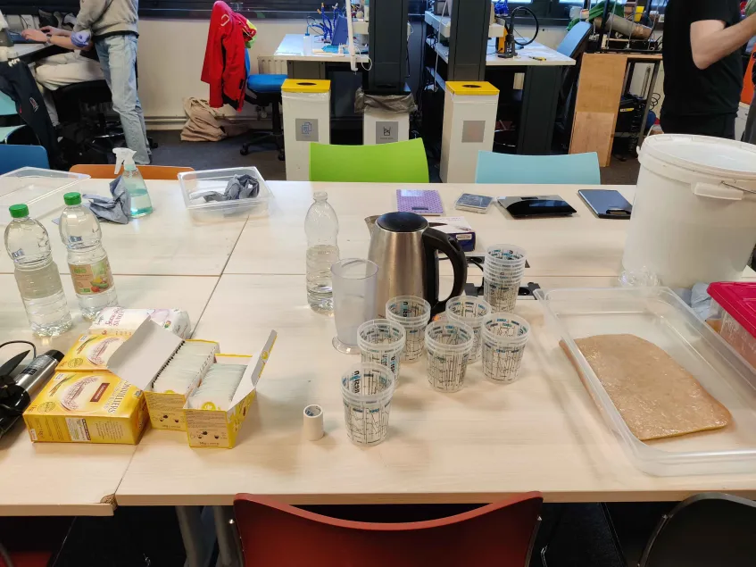
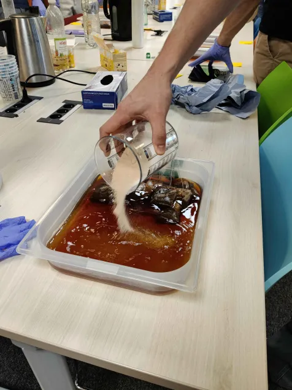
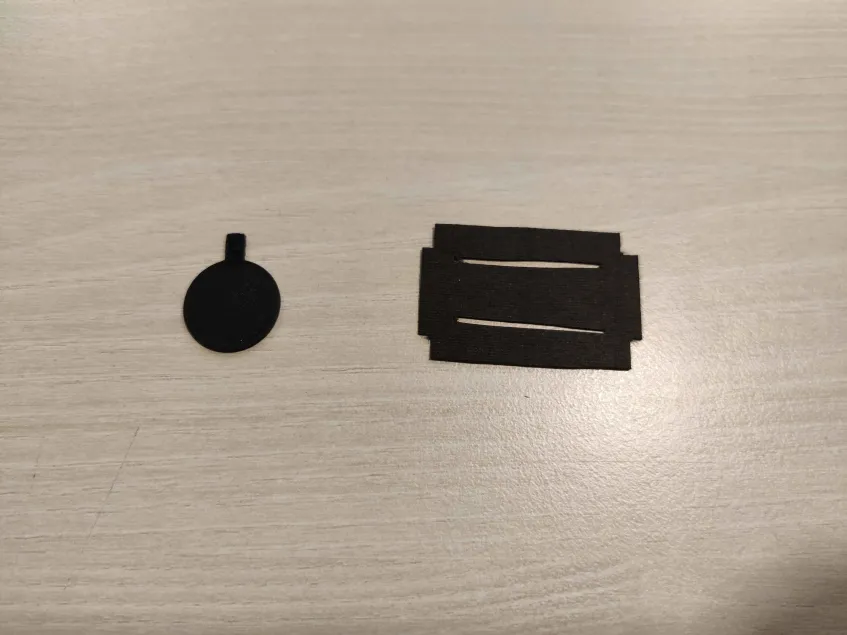
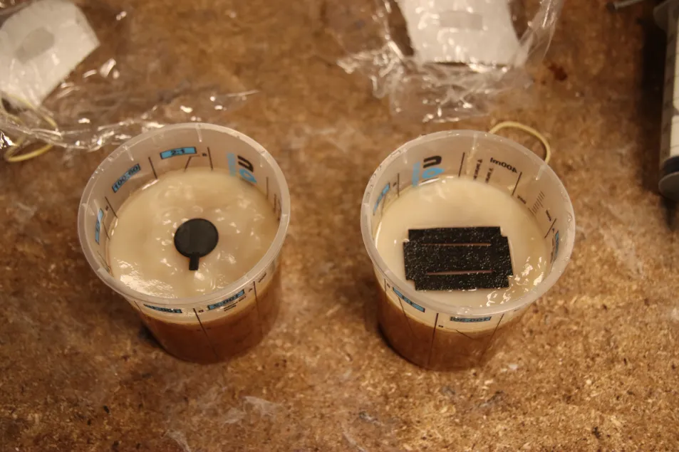
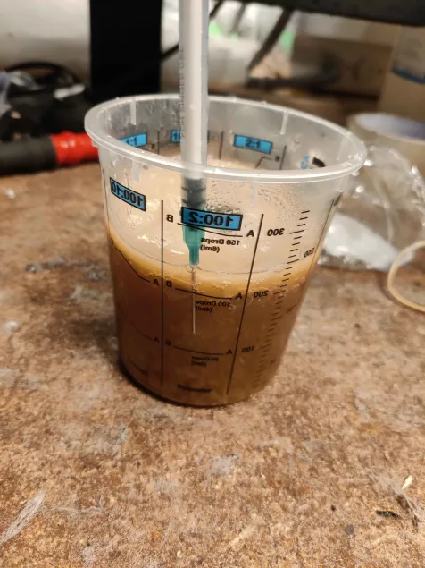
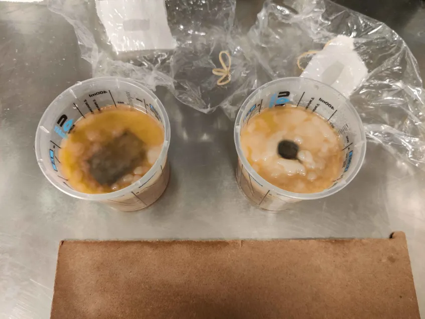
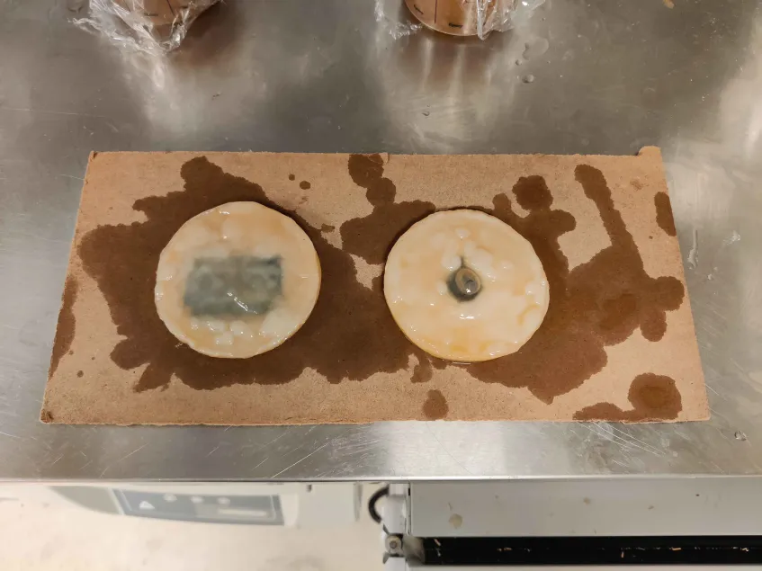
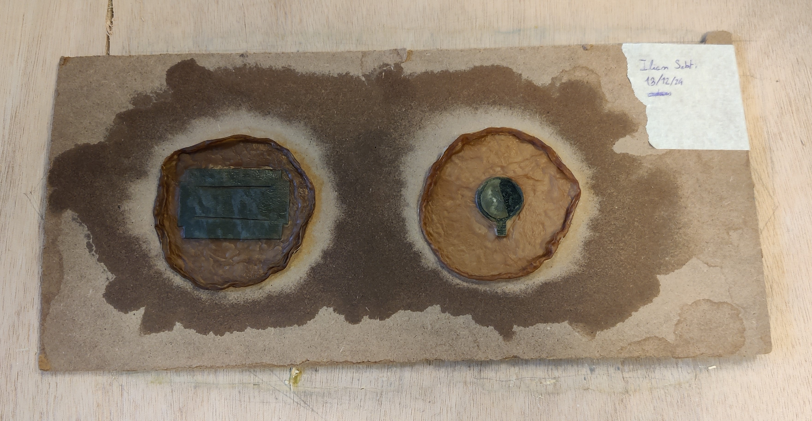
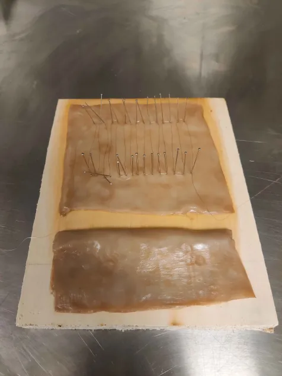
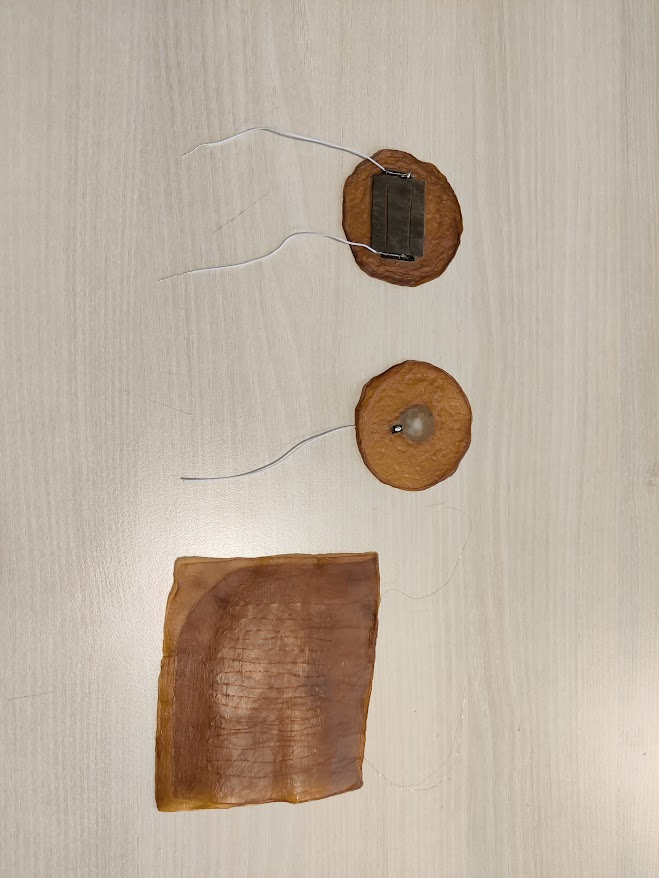

Overview
Symbiotic Culture Of Bacteria and Yeast (SCOBY) is a culinary symbiotic fermentation culture consisting of lactic acid bacteria,
acetic acid bacteria, and yeast which arises in the preparation of sour foods and beverages such as kombucha.
In its most common form, SCOBY is a gelatinous, cellulose-based biofilm or microbial mat found floating at the container's air-liquid interface.
Here we will explore the potential that scoby embeded electronics offers us. By making some scoby embeded sensors ourselves.
In such fashion we plan on making a capacitive touch sensor, a resistive bend sensor and a resistive heat sensor.
Growing a scoby sheet
As scoby is a spoilage of kombucha production, we start by preparing a great quantity of sugar kombucha tea.
For 1L of kombucha, we need:
- 6g of tea = 3 tea bags
- 300g of sugar (50% white, 50% brown)
- 800g of boiling water
- 100g of vinegar
- 100g of scoby

In a large plate mix the water, tea and sugar.

Let the preparation cool off (cover the plate).
Grind the scoby into pieces, then add it into the preparation with the vinegar.
cover the plate with a plastic film, pucture a hole in it before covering it with medical tape (for aeration).
Then put the preparation in the incubator.
Embeding sensors by growing
We prepare the capacitive the sensors:
The touch sensor is a 3D printed (with conductive PLA) pad
The stretch sensor is a cutout of a conductive fabric.
After sanitising the sensors we put them on top of the scoby.
Then we add some of the medium on top of said sensors using a syringe (may need to be done multiple times during the growth).



Once the Scoby has grown enough on top of the sensors,
The scoby sheet can be extracted, cleaned with water and then dried in a hoven/dehydrator (50°C, 4h).



Embeding sensors by slicing
For the heat sensor, we use a copper wire. Spread on a large surface, the heat dilation of the wire changing its resistance.
We cut out a sheet of scoby, rince it and cut it in two parts.
Then with the help of somme needles we thread the copper wire on the sheet.
When done, we cover with the other sheet and press it to remove air bubbles.

Testing the sensors
Once the sensors are successfully embeded.
We cut out a small part of the dried scoby with a scalpel to connect the resistive pad and fabric to an actual electronic wire
For that sew the wire to the sensor using a conductive string. We can complete this connection with some carefull soldering.

capacitive touch sensor
Using the following circuit (100kΩ resistor here) and code:
//Libraries
#include <CapacitiveSensor.h>//https://github.com/PaulStoffregen/CapacitiveSensor
//Parameters
bool autocal = false;
const int numReadings = 10;
long readings [numReadings];
int readIndex = 0;
long total = 0;
const int sensitivity = 1000;
const int thresh = 200;
const int csStep = 10000;
CapacitiveSensor cs = CapacitiveSensor(2, 3);
void setup() {
//Init Serial USB
Serial.begin(9600);
Serial.println(F("Initialize System"));
//Init cs
if (autocal) {
{
cs.set_CS_AutocaL_Millis(0xFFFFFFFF);
}
}
}
void loop() {
Serial.println(smooth());
delay(250);
}
long smooth() { /* function smooth */
////Perform average on sensor readings
long average;
// subtract the last reading:
total = total - readings[readIndex];
// read the sensor:
readings[readIndex] = cs.capacitiveSensor(sensitivity);
// add value to total:
total = total + readings[readIndex];
// handle index
readIndex = readIndex + 1;
if (readIndex >= numReadings) {
readIndex = 0;
}
// calculate the average:
average = total / numReadings;
return average;
}
resistive stretch sensor
Using the following circuit (100kΩ resistor, 1 pF capacitor) and code:
//Parameters
const int numReadings = 10;
long readings [numReadings];
int readIndex = 0;
long total = 0;
int sensor = A3;
void setup() {
//Init Serial USB
Serial.begin(9600);
Serial.println(F("Initialize System"));
}
void loop() {
Serial.println(smooth());
delay(250);
}
long smooth() { /* function smooth */
////Perform average on sensor readings
long average;
// subtract the last reading:
total = total - readings[readIndex];
// read the sensor:
readings[readIndex] = analogRead(sensor);
// add value to total:
total = total + readings[readIndex];
// handle index
readIndex = readIndex + 1;
if (readIndex >= numReadings) {
readIndex = 0;
}
// calculate the average:
average = total / numReadings;
return average;
}
resistive heat sensor
Using a weatstone bridge calibrated for a measured resistance at ambiant temperature of the sensor at 2Ω and the following code,
it would have been possible to have an effective sensor.
However due to the copper wire being very thin combined with the necessity to burn the tip to make it conductive.
I was unfortunately unable to make it work, as any attempt to make the wire connect would lead to it being destroyed.
Eventually I deemed the sensor as unsalvagable.
const int pinA = A0; // Point A
const int pinB = A1; // Point B
float V_supply = 5.0; // Voltage supply to the bridge
void setup() {
Serial.begin(9600);
}
void loop() {
int rawA = analogRead(pinA); // Read voltage at point A
int rawB = analogRead(pinB); // Read voltage at point B
// Convert ADC values to voltage
float V_A = rawA * (V_supply / 1023.0);
float V_B = rawB * (V_supply / 1023.0);
// Calculate voltage difference
float V_AB = V_A - V_B;
Serial.println(V_AB);
delay(500); // Adjust as needed
}
In theory, copper has a temperature coefficient of resistance (TCR) of about 0.0039 per °C. so a 2 Ω sensor will change resistance by:
ΔR=R0×TCR×ΔT
A 10°C change should result in a gain of :
ΔR=2×0.0039×10= 0.078 Ω
assuming that the Intensity does not vary :
- Ug = 3.3V
- R2 = 5.1KΩ
- U = RI
- R1 = 2
- R1' = 2 + 0.078
=> I = 3.3/5100 ~ 0.647mA
= > ΔU1 = U1'- U1
= (R1' * I )- (R1 * I)
= (R1 * I + 0.078 * I) - (R1 * I)
= 0.078 * I
= 0.05
Therefore, The tension should gain 0.05 V/ 10°C
Back to Portfolio